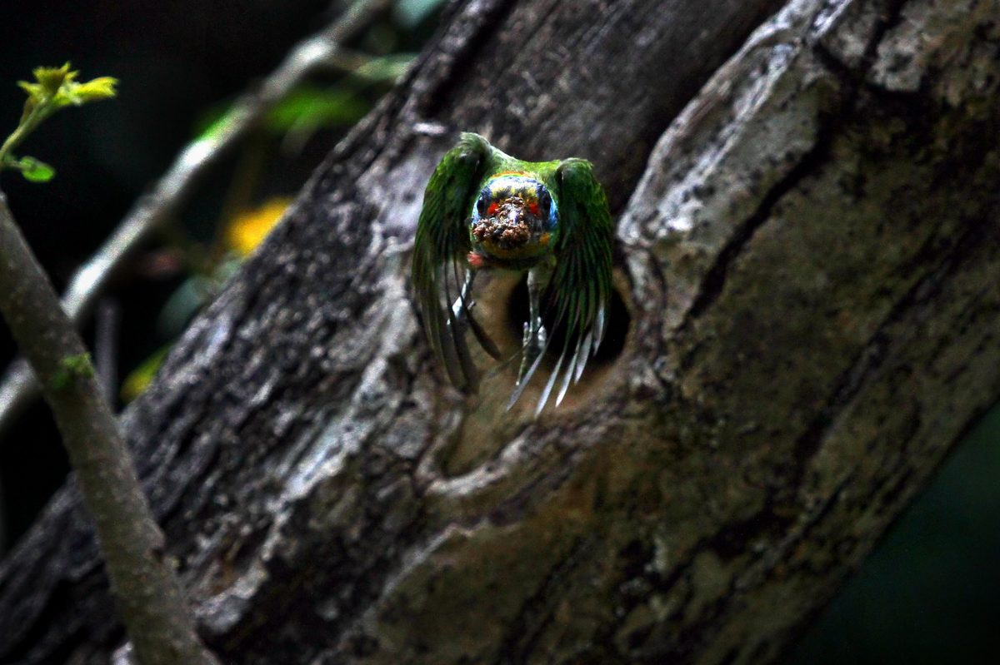
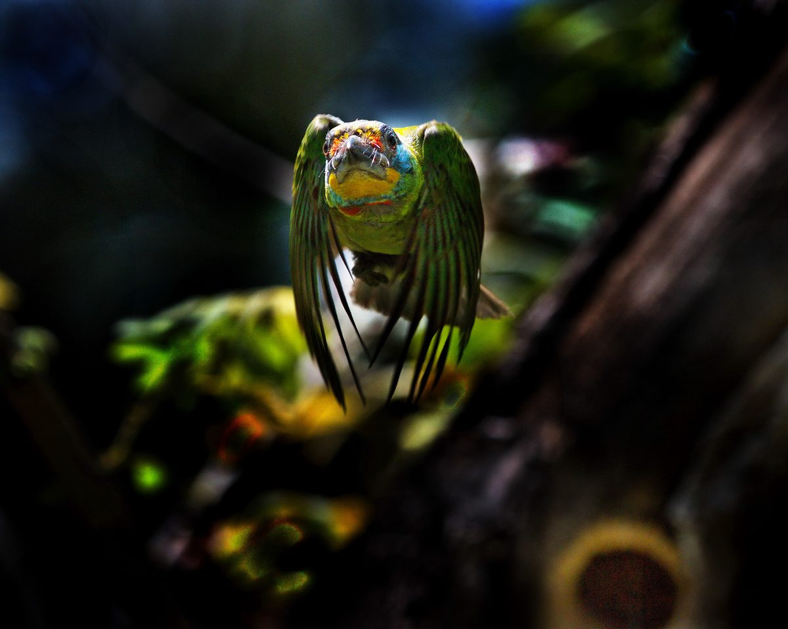
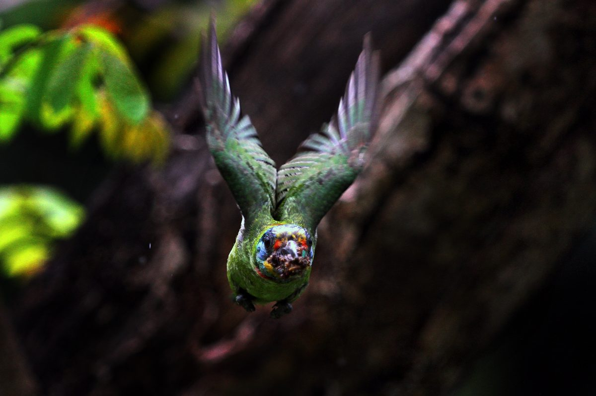
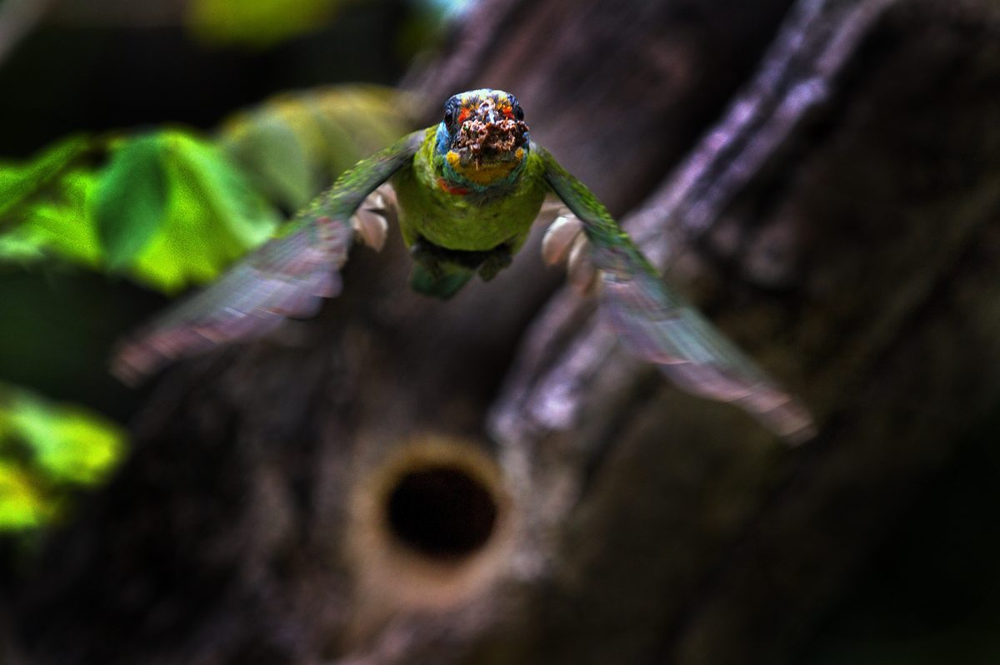
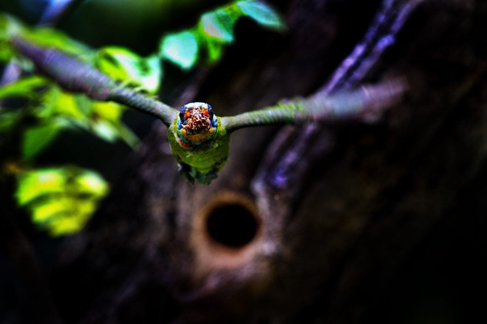

成大校園有一五色鳥巢洞，高三公尺多，在棧道邊半枯樹上。一對親鳥，三個子女，和每天都有十位攝影者親密共處，雛鳥約四週大時各自離巢，親鳥整理房間後，完成巢內撫育工作。攝影者言猶在耳的親鳥叫聲是「只要站在特定樹枝上，攝影者都不敢說話，也不敢動，躲在相機後面，快門聲和雛鳥共鳴」。
攝影者以拍攝飛行版為樂，互相切磋，卻難有「數據化」描述，本文嘗試具體化的技術探義。
每個人都有習慣性行為，也都有毛病；五色鳥也有。形成的行為模式，正是攝影「先知後行」的按快門的基礎參考架構。特定情境下的特定行為，其行為次序、時間歷程均能達到快門時間、空間組合後的特定價值表現內容。
兩隻親鳥，各有不同的行為模式，今僅以特定一隻入洞後，出洞外飛的調焦為重點探義。
大體言，親鳥出洞時，在洞口左看右看，之後，雙腳一蹲一蹬，向外上、下各15度角範圍內直飛出去。本文假設每次都用同樣速度向外飛行。
測定牠的速度是多少，並不重要，重要的是攝影者的反應起點是在什麼時機狀態下，按下第一張快門；而且永遠不會有第二張因連拍而獲得焦點的機會。嚴格地說，第一張的調焦，也不可能是自動調焦得到的。
「拍到的，永遠不是看到的。」個體反應時間和相機延釋時間之和，就是畫面所見。攝影者得有能力知道「等一下」發生的事件，現在就按下快門，才能因應需求的畫面出現。影響反應的因素，包括刺激強度、刺激持續時間、刺激種類；有機體有關的因素，包括前期、結果的知識、訓練等，也左右反應時間的快慢。消息量少，一定比消息量多反應快。總之，不可能有固定的反應速率，用在快門操作上，況且不同機身必有不同的延釋時間。當然，按快門方面言，個體反應時間的不同，自然異於他人對畫面構圖的機會。如何確實掌握反應時間，將按快門的動機和畫面呈現結果合而為一，是當今課題。
一般言，最單純而簡單的刺激，吾人得用0.2秒反應，相機延釋時間也有0.05~0.1秒時間。故拍照反應，必須騰出0.3秒作之前準備。50公里時速的飛鳥，已飛4.2公尺。預期反應時機，可省去0.2秒的反應相關因素。如同打羽球，等球過網進入自己場地時才反應，是來不及打到球的，若當對方舉拍姿勢出現，已能預期打遠打近，反應足足有餘。五色鳥出洞、離洞的時間段落裏，吾人充分認知且能明確「看到」離洞的一點一滴過程，即可建立推估焦點與快門的合一基準。作者強調「看到」離洞，而不需「看見」；無需心理解釋，僅網膜呈像即有助於按快門恰當時機的表逹。知覺有選擇性，加上「我認為…..」按快門複雜化之後，焦點與按快門時機變數加多，準確性降低。先前數字放一邊，在五色鳥出洞路線的平行線上選一特定地點，架妥長鏡頭，愈長愈好，準備連拍出洞鏡頭。依各人能力，「看到」一蹲，或「看到」一蹬，或「看到」雙腳離洞的「形相」，正是按快門的時機。連拍第一張，畫面呈現牠的位置即側面拍攝的結果。已知成鳥身長（嘴尖至尾尖）為20公分，依此數據，可推估測得該鳥離洞的可能數據，假設拍出此張相片，確定在「一蹲」時按下快門，五色鳥距洞口80公分，這充分告知，只要調焦在洞口前方80公分處，即可拍得焦點正確的正向飛行畫面。五色鳥向我飛，如願矣！
若不計較畫面範圍大小的變化，正向洞口調焦，後退80公分即可，只待其「一蹲」形相出現，飛行方向、速度如預期，合焦不在話下。或可對正洞口調焦，鏡頭可轉向任何一方，但須角度不變，向上向下均可，將原先測得焦點位置對應特定物體，實測80公分，立標調焦，轉向洞口，準備拍攝，可得理想範疇的畫幅構圖。
吾人調焦，對開放光圈鏡頭言，調的不是焦點，而是最大光圈下的前後景深範圍。迎向鏡頭運動的有機體，為求畫面上的特定比例，在高速快門下，近距拍攝，司空見慣，總以為景深有夠長，其實，景深出乎意料的短，調焦觀念是設定在景深前半或是後半，足以頭痛，最無奈的是景深無法含蓋有機體「重要部位」。
另一種調焦方式也是可行的：五色鳥出洞，始終跟焦是也。基本上，牠起飛時，初速度慢，之後漸快，在相機延釋時間內與其同步跟焦；操作調焦環，起始也是慢的，再以等比級數加快即可能有機會「一連串」距離的合焦，呈現在畫面的焦點極為「精實而美麗」，鳥的驅體沒有絲毫「模糊」之可能，也不會因為相片放大而呈鬆散現象。相機調焦環，調動距離和焦點變化，各段皆不同，焦點的遠或近，操作速率，是不一樣的，拿捏特定拍攝位置，撫育期間內，善加練習，足以跟焦成功。
作者拍五色鳥向我飛，以280mm鏡頭，調焦在5.2公尺上下位置，f4景深約8公分，五色鳥身長20公分，嘴、眼能拍清晰，胸部已模糊。動態情境下，按快門時機，豈可絲毫怠惰！故確實「看到」五色鳥在按快門時的形相，是無與倫比的重要──確實訂定其飛入景深的身體部位的範圍。當然，退後些，或縮小光圈，改用短鏡頭，自可改善惡劣情境。另一方面，權衡本身就是價值判斷。
飛羽朝上或朝下，在上述調焦過程上，不能如願，只能碰運氣。若知大型鳥每秒振翅四下，中型鳥振翅八下，振翅週期，自可推出當前飛姿、距離期待姿態的時間，若需延後1/16秒是期待畫面，則一秒八張的連拍，取第二至第三張的實際距離，正是1/8秒鳥飛距離，1/16秒能飛多少，再調整多少相機距離洞口的位置，快門延後1/16秒再行操作即可，如願拍得羽翅造形，不是難事。
訂定按快門的起點座標後，操作的穩定性，決定控制畫面時機的正確信度。五色鳥每天進出巢洞總有30次以上，相機的監視器即時回饋，作下次快門的俢正參考，即使n次不成功，下次一定趨於成功，成為擁有成就感的攝影者。
野鳥反應快於人類，牠們的時間有膨漲性，把人的動作當電影慢動作看待。人們提高反應速度的能力，是極為困難的，但有效的觀察力是可以及時體驗和鍛練的。先前提到的「看到」而已。確實「看到」，不容有些許雜訊。生活上，看籃球賽投籃動作，是那根手指最後離開球呢？打擊手出棒打棒球，球落在棒子哪一點上呢？等等類似問題都能「看到」，只是被知覺矇蔽太多觀看因素。飛離洞口的五色鳥是左腳、還是右腳最後離開？如何離開？將「看到」的任何一個離洞時間點和按快門動作確實聯結，依個人反應能力為基準點，只要鳥飛習慣不變，精算連拍第一張與洞口距離，設定焦點，成功畫面眼前預見。攝影者與快門延釋的反應快慢影響測距長短，但不會影響到構圖美感。按快門不是測試反應，也不是挑戰技術，更不是和野鳥比快慢，它是順理成章的行為。
以往拍攝出洞鏡頭，攝影者大多急於「猜」或「碰」其出洞刹那，運氣與成就感相依相生似的。何不延後發生事件內容，用「看到」當基點，依個人能力──每個人都具備的能力，「慢條斯理」地按下快門，用畫面的第一張照片，為參考根據，確實建立自信的刺激反應模式基礎。
當年拍「洋燕向我飛」，無法明確理解燕兒飛行的時空座標，只因視覺有「嚴重」的暫留現象，眼前飛燕，呈模糊樣態。肉眼看不清楚，乃網膜無法呈像所致，之後，改用「心眼」觀看，迎刃而解。五色鳥的習慣性飛行模式有助於「心眼」意會和體悟，嚴格說來，視覺暫留現象，不致於影響「看到」的問題，無須將肉眼提升到心眼境地，不過，用大腦按快門之際，用「心」體會作品，是必要的考慮。
拍照，情緒可以澎湃，心一定要靜。按快門前，承受的刺激消息量，愈少愈好。由複雜開始淘汰，以簡單做為歸結。作者拍照片，只求掌握特定五色鳥離洞時機，其餘變數出現，接受失敗而已，往往失敗的鄰居就是成功。成就感令人快樂，不像碰運氣，只會高興罷了。
檢驗焦點正確與否的任何形式的回饋，依個人性向決定。今提供一種「可能」合焦的技巧：由觀景窗察看五色鳥飛向鏡頭的歷程，是由模糊漸入清晰，再進入模糊狀態。若有按快門動作，當反光板打上去之後，會有一段呈黑畫面的時光，持續觀察時，看到之前、之後的糢糊，而不見清晰，則有可能合焦。若總是看到清晰在反光板打上去之前，這意味著焦點位置需要挪遠些。
學習調焦，易；幾時學習觀看失焦的模糊感與距離的關係呢？與其每次拍照修正設定焦點位置，不如記住特定焦距鏡頭，在特定距離、特定光圈下的洞口模糊樣態，「調特定模糊」即可。
要五色鳥在快門1/1000秒或1/2000秒內飛進八公分景深的空間裏，想比做還難，實際操作後，鳥飛速度和時間終被焦點微調取代，知難行易。
拍動態和靜態，難易程度和心理障礙指數，呈正相關。建立適當認知態度對攝影言，難易指數，不是統計學的問題。動態和靜態都是美感內容，取向不同罷了。坊間多少人以為飛行版的難度就是美感，大錯。
話說回來，攝影真正的挑戰，還是在於按快門之後，刹那間會發生什麼事？作者喜歡拍攝熟悉的鳥，或熟悉作者的鳥，意義在此。和野鳥溝通，取得互相尊重和諒解，照片不會有殺伐之氣，人鳥間有互動經驗之後，野鳥行為動機和按快門動機同時發生，無疑是共同創作作品。
今後，任何公園都有機會在枯樹上見到五色鳥的窩，希望攝影者都能有意識地經驗到按快門的相關時空歷程的點點滴滴，連拍不是增加成功機會，而是減少人工捲片動作。倘聽到：「五色鳥出洞會由白髮上方50公分處飛過」時，會心一笑即可。

No.1 典型飛出樹洞，鏗鏘有力，富觸覺感。

No.2 與No.1相同，可見攝影者按快門與五色鳥飛行穩定性均高。

No.3 羽翅朝上，美感受手錶廣告影響，其實不管羽翅如何展示，自有其美。

No.4 1/1000秒快門，頭部清晰，羽翅模糊，生動而有趣。

No.5 樹洞的模糊樣態，有識之士或可辨出五色鳥與樹洞距離。